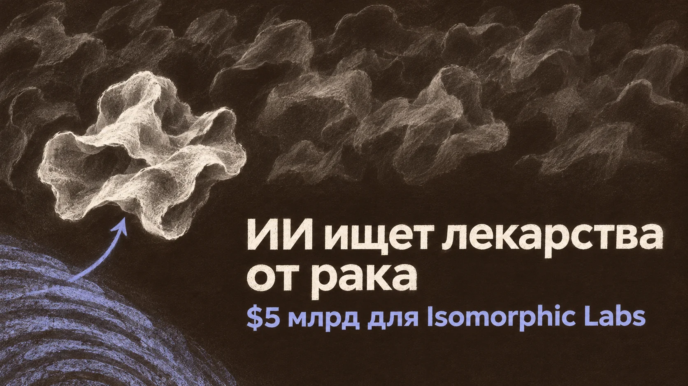

Онколог Сид Девараконда обнаружил среди предложенных нейросетью гипотез собственные идеи, к которым шёл годами.
Это именно то, что я думаю. А мне понадобилось 15 лет, чтобы прийти к этому.
19 ноября Институт искусственного интеллекта Аллена (Ai2) открыл доступ к научному ИИ-агенту Theorizer.
Учёный задаёт вопрос, а нейросеть изучает научные публикации, сопоставляет результаты исследований и предлагает возможные объяснения со ссылками на источники.
Что заставляет опухоль расти?
Девараконда занимается изучением рака лёгких. Примерно в 20–30% случаев аденокарциномы лёгкого учёным не удаётся обнаружить известную генетическую мутацию, отвечающую за рост опухоли.
Theorizer помог сформулировать несколько гипотез. Дальнейший анализ данных с помощью другого ИИ-агента, AutoDiscovery, указал на возможную роль белка CDK2, участвующего в делении клеток.
Если зависимость опухолевых клеток от этого белка подтвердится экспериментально, его блокирование может стать одним из способов борьбы с заболеванием.
Искусственный интеллект уже активно применяют для поиска новых лекарств от рака.

Пятьдесят теорий вместо двух
Нейробиолог Жером Лекок воспользовался Theorizer для изучения клеток головного мозга, участвующих в обработке зрительной информации.
Учёный рассчитывал получить одну-две гипотезы, а получил сразу пятьдесят.
В одной из них нейросеть объединила результаты математического моделирования с экспериментальными наблюдениями, подтвердив предположения самого Лекока.
Попробовать Theorizer можно на платформе Asta. Институт предоставляет бесплатный лимит токенов. Исходный код инструмента также открыт.